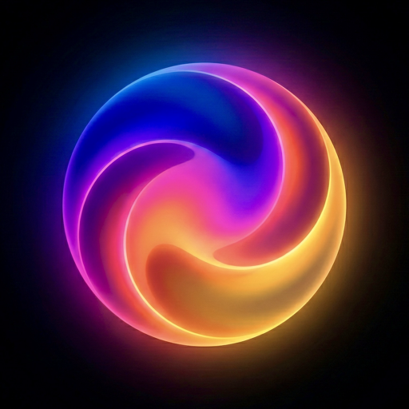

Last updated: 20 March 2026
Privacy policy written for how the app actually works.
Lumina is designed to keep as much data as possible on your device and local network. It uses microphone input for real-time audio analysis, stores room setups and scenes locally, and communicates directly with the lighting hardware you choose to connect.
Summary
- Microphone access is used to analyse audio in real time for lighting response.
- Lighting control happens across your local network with supported devices and bridges.
- Room configuration, scenes, gradients, settings, and mappings are stored locally.
- Philips Hue bridge credentials are stored in Apple Keychain on your device.
- Lumina does not include third-party advertising SDKs.
- Lumina does not send analytics or marketing profiles to external analytics services.
Information Lumina may access or store
Lumina may access microphone input to detect BPM, pitch, energy, beat phase, and frequency-band activity for audio-reactive effects. Audio analysis is intended to happen locally on your device.
For local-network control, the app may access or store device names, IP addresses, fixture layouts, pixel counts, Hue entertainment area identifiers, Nanoleaf authorization tokens, and LIFX MAC addresses so that it can discover, pair, configure, identify, and control connected hardware.
Lumina also stores room layouts, scenes, sequences, custom gradients, lighting settings, calibration values, background preferences, and audio-input selections locally so your setup can be restored between sessions.
Credentials and authentication data
If you pair Lumina with a Philips Hue bridge, the app stores the Hue username and client key in Apple Keychain on your device. Nanoleaf authentication tokens may be stored locally as part of the saved device configuration.
These credentials are used only so the app can reconnect to your devices without asking you to pair again each time.
How Lumina uses information
- Provide audio-reactive lighting features.
- Connect to and control compatible lighting hardware.
- Save your setup, scenes, and preferences.
- Restore your configuration when the app reopens.
- Support pairing, identification, and streaming features for supported devices.
- Maintain app performance and reliability.
What Lumina does not intend to do
- Sell your personal information.
- Build advertising profiles about you.
- Include third-party advertising networks.
- Send behavior-based analytics to external analytics platforms as part of core features.
Data retention and security
Locally stored information remains on your device until you delete saved content, unpair devices, clear app data where your platform allows it, or uninstall the app. Items stored in Apple Keychain may persist until removed by the app, by your system, or when related keychain data is deleted.
Lumina uses platform-provided mechanisms where available, including Apple Keychain for Hue credentials. No method of storage or transmission is completely secure, so you are responsible for securing access to your device and local network.
Third-party ecosystems and your rights
Lumina works with third-party hardware and ecosystems such as WLED, Philips Hue, Nanoleaf, and LIFX. Your use of those services is also subject to their own privacy policies and terms.
Depending on where you live, including under U.K. GDPR or similar laws, you may have rights relating to personal data such as access, correction, deletion, restriction, or objection. Because Lumina is designed to keep most information on your device, many privacy choices can be exercised directly by managing permissions, saved content, and app installation.
Contact
If you have privacy questions or requests, use the developer support contact details listed on the app’s App Store product page or support site, if available.